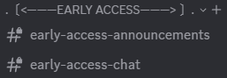
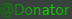

Private channels
See supporter-only announcements and talk directly with the early-access community.
Support the project / Get it first
Help fund Ultimate Macro and get access to new builds before public release, plus a private space with the team and other supporters.
$1.99 USD per month through Ko-fi. Cancel anytime.
Member benefits
Supporters get a closer look at development and a dedicated place to talk about upcoming releases.

See supporter-only announcements and talk directly with the early-access community.

Your membership includes the exclusive green role shown above in the Ultimate Macro Discord.
Download new Ultimate Macro versions before they are posted publicly. Keep early-access files inside the server until release.
Good to know
Early Access supports development and unlocks previews and community perks. Ultimate Macro’s public releases remain free and open source.
Join the inner loop